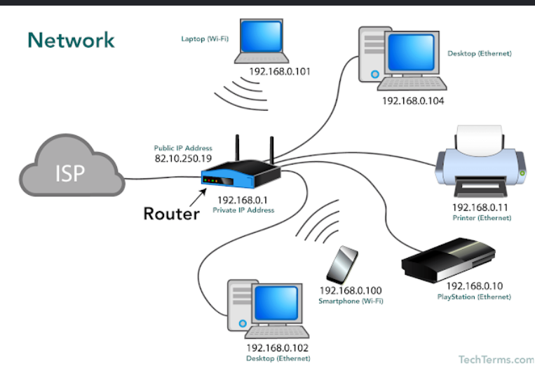
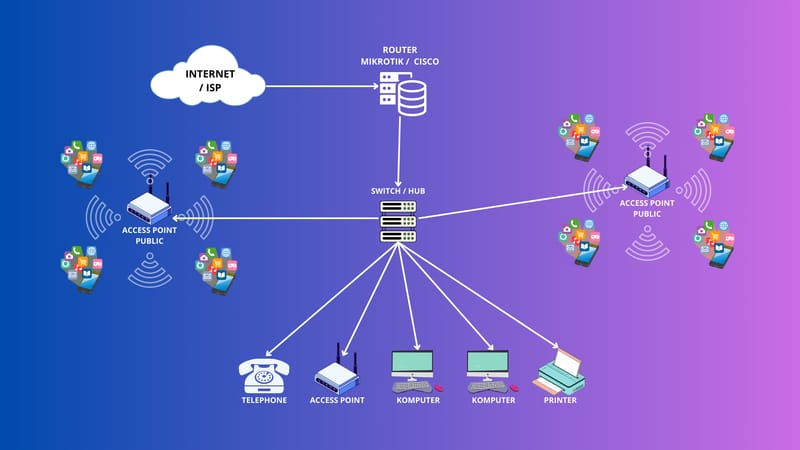
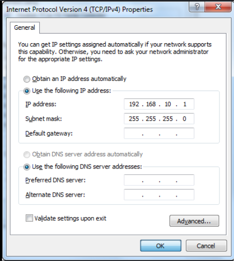
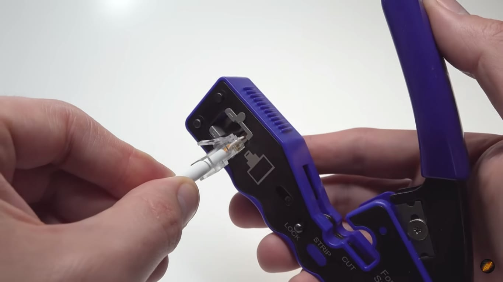
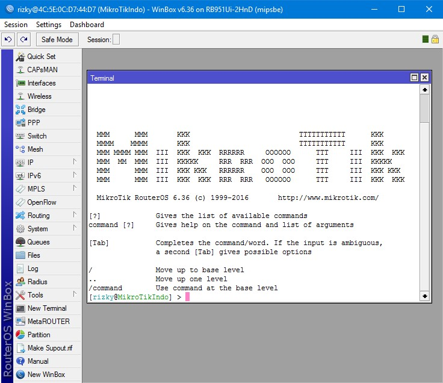
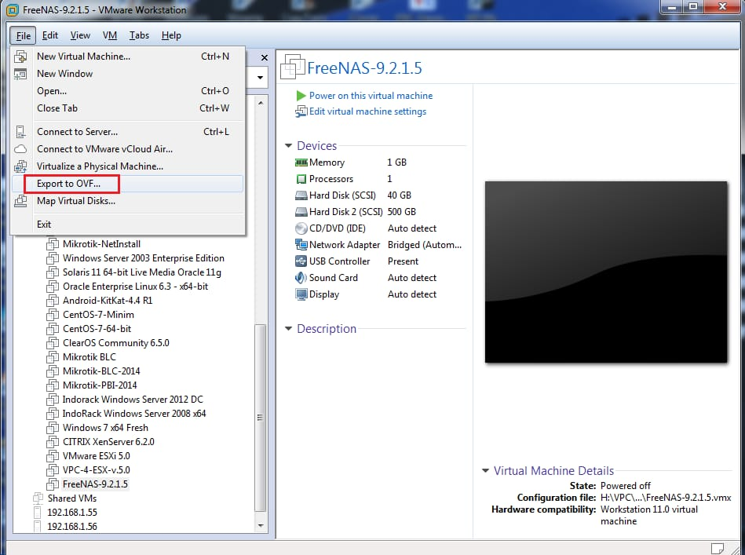
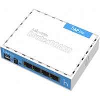
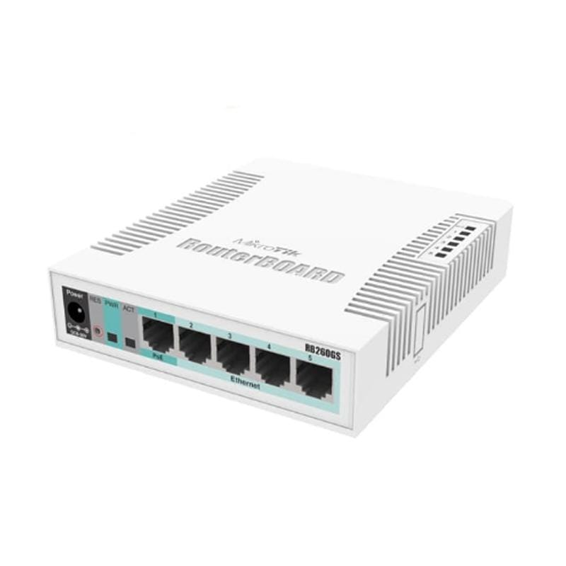
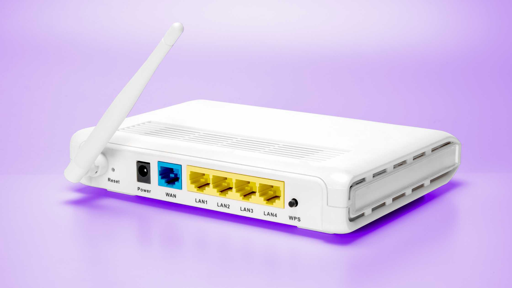

TJKT Learning merupakan website edukasi yang dirancang untuk membantu siswa mempelajari dasar-dasar Teknik Jaringan Komputer dan Telekomunikasi. Website ini menyediakan materi dasar, panduan praktik, serta penjelasan mengenai perangkat jaringan yang disusun secara sederhana sehingga mudah dipahami.

TJKT Learning adalah media pembelajaran berbasis website yang dibuat untuk membantu siswa memahami materi dasar Teknik Jaringan Komputer dan Telekomunikasi (TJKT). Website ini menyajikan materi yang sederhana, sistematis, dan mudah dipelajari oleh pemula.
Selain materi teori, website ini juga menyediakan panduan praktik seperti crimping kabel UTP, konfigurasi IP pada MikroTik, serta penggunaan VMware. Dengan demikian, pengguna dapat belajar teori sekaligus memahami penerapannya.
Teknik Jaringan Komputer dan Telekomunikasi (TJKT) merupakan kompetensi keahlian yang mempelajari instalasi jaringan komputer, administrasi jaringan, perangkat jaringan, sistem operasi, virtualisasi, hingga teknologi telekomunikasi.
Mempelajari cara menghubungkan beberapa perangkat agar dapat saling berkomunikasi dan bertukar data.
Mengenal pengelolaan server serta layanan jaringan yang digunakan dalam dunia industri.
Mempelajari cara menjaga keamanan jaringan dari gangguan maupun akses yang tidak sah.
Mengenal teknologi komunikasi data baik melalui media kabel maupun jaringan nirkabel.
Website ini dirancang untuk membantu siswa mempelajari dasar-dasar TJKT dengan materi yang sederhana, tampilan yang menarik, dan mudah dipahami.
Materi disusun secara bertahap mulai dari konsep dasar jaringan hingga pengenalan perangkat jaringan.
Tersedia panduan praktik yang mudah diikuti sehingga siswa dapat belajar teori sekaligus praktik.
Website dapat diakses menggunakan laptop maupun smartphone dengan tampilan yang tetap nyaman.
Mengenal pengertian jaringan komputer, fungsi, manfaat, serta jenis jaringan berdasarkan jangkauannya.

Mempelajari berbagai bentuk topologi jaringan seperti Star, Bus, dan Ring beserta kelebihan dan kekurangannya.

Mengenal alamat IP, subnet mask, gateway, serta contoh konfigurasi dasar jaringan komputer.

Belajar menyusun kabel UTP, memasang konektor RJ45, hingga melakukan pengujian menggunakan LAN Tester.

Memahami cara memberikan alamat IP pada interface MikroTik menggunakan aplikasi Winbox.

Mengenal virtual machine, membuat mesin virtual, serta mengatur jaringan menggunakan VMware.
Materi Dasar
Praktik
Perangkat
Gratis Dipelajari
Mulailah belajar dari materi dasar, lanjutkan dengan praktik, kemudian kenali berbagai perangkat jaringan yang sering digunakan di dunia kerja.
Mulai SekarangSelain memahami teori dan praktik, siswa juga akan mengenal beberapa perangkat jaringan yang sering digunakan dalam dunia kerja maupun pembelajaran TJKT.

Router berfungsi menghubungkan dua atau lebih jaringan yang berbeda serta menentukan jalur terbaik dalam proses pengiriman data.

Switch digunakan untuk menghubungkan beberapa perangkat dalam jaringan LAN sehingga dapat saling bertukar data dengan lebih efisien.

Access Point berfungsi menyediakan koneksi jaringan nirkabel (Wi-Fi) sehingga perangkat dapat terhubung tanpa menggunakan kabel.
Semoga website ini dapat membantu siswa dalam mempelajari dasar-dasar Teknik Jaringan Komputer dan Telekomunikasi secara lebih mudah, menarik, dan menyenangkan.
Pelajari Materi